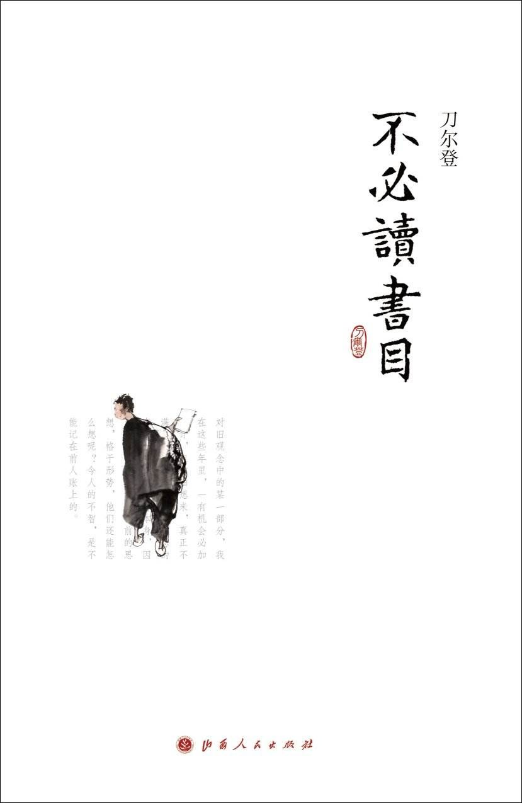

《不必读书目》

总体观点
当代学者、杂文家刀尔登反潮流而动的独立思想批判力作，以辛辣幽默而透彻入骨的文字，将四十余部中国传统经典推上现代思想审判台。
核心命题：所谓“不读”，不是真的无知盲从，而是卸下对古圣先贤盲目崇拜的滤镜。传统经典中充斥着君主专制的顺民哲学、逻辑混乱的类比诡辩、文人士大夫的谄媚虚伪与残忍的江湖暴戾。
本书以现代启蒙理性、人道主义和实证逻辑为尺，重估传统文化价值，倡导读者摆脱古籍神话束缚，做拥有独立思考能力的现代公民。
核心观点
-
1. “不读”是摆脱文化迷信神化、找回独立理性思考的现代思想启蒙
书不是神圣不可侵犯的图腾，不盲从古圣先贤的权威光环，带着现代常识与怀疑精神审视经典才是真正敬畏文明。
在人人高呼“国学热”、盲目要求孩子通读四书五经的浪潮中，刀尔登敢于指出其中压抑人性的宗法毒素，撕下神圣面纱。 -
2. 先秦诸子长于华丽修辞比喻，而极度匮乏严密规范的形式逻辑
古人惯于用打比方和生动寓言替代严谨的概念界定与因果实证，常常用气势压人掩盖推导漏洞，把哲学引向诡辩。
孟子论性善用“水之就下”打比方，告子反驳水也可搏而跃之；两者都是打比方，毫无实证逻辑支撑，本质是文学修辞而非科学论证。 -
3. 传统正史的“春秋笔法”往往为了道德教条而严重牺牲了历史真相
史官为了迎合君仁臣忠、天理昭昭的道德说教，不惜删削隐匿残酷真实的政治算计，把血腥权力倾轧粉饰为天道报应。
《左传》与公羊学中充满以后验胜败论德行的叙事，胜者必有盛德，败者皆因失德，彻底遮蔽了制度与力量博弈的真实面貌。 -
4. 古代名士文人的风骨神话背后，掩盖了奔走钻营、乞怜皇权的媚态
文人士大夫一方面在诗文中孤芳自赏、自诩仙风道骨，另一方面又极度热衷于给达官显贵呈递肉麻求荐信以求一官半职。
诗仙李白写下“安能摧眉折腰事权贵”名句的同时，在现实中给当朝权贵韩朝宗等人写的干谒信极尽逢迎阿谀之能事，文人格调何其分裂。 -
5. 警惕明清通俗小说宣扬的流氓匪气与弱肉强食的嗜血丛林法则
《水浒传》等民间文学对滥杀无辜、动辄杀人越货的绿林土匪大加赞美，潜移默化中污染了国民底层的同情心与法治观念。
李逵在江州劫法场时挥舞双斧不分青红皂白排头砍去，无数无辜围观百姓丧命，小说却将其美化为天真烂漫的好汉义气，惨无人道。 -
6. 传统杂学方术充满附会玄想，严重缺乏现代实证科学的实事求是态度
古代养生、茶经、相马与阴阳风水著作中充斥着神秘巫术与穿凿附会，不可因其古老便盲目奉为养生至宝。
所谓古代医学杂著动辄以五行相生相克推导病理，缺乏解剖学与双盲实验检验，若不加批判全盘照搬反倒贻误现代医学救治。 -
7. 现代公民应以现代人权常识与人道尊严作为阅读取舍的终极天平
区分文物的历史文献价值与现代文明的价值取向；凡是违背人道尊严、倡导愚忠愚孝顺民哲学的书籍，均属不必奉为圣经之列。
《二十四孝》中“郭巨埋儿”等灭绝人性的愚孝故事，即使文辞古奥，在现代文明视角下也应当彻底移出启蒙书架。
全书思维导图 · 知识脉络树
全书结构
-
先秦诸子篇（不读《老子》《论语》《孟子》《墨子》《庄子》《孙子》）
解构先秦诸子被神圣化的思想光环，批判其论辩中的类比滥用、权谋算计与为封建统治定制的道德规训枷锁。
剖析孟子善辩辞令中的逻辑偷换，指出用生动比喻替代严密论证的修辞术，往往把天下治乱简化为君王一人的道德修养说教。 -
经史典籍篇（不读《山海经》《左传》《公羊》《周易》《论衡》《贞观政要》）
扒下传统正史与经学所谓“春秋笔法”的神圣伪装，揭示史官如何用道德评价篡改事实真相、将权力争夺合理化。
指出《左传》与公羊学中充满以后验成败论英雄的春秋笔法，把政治斗争的血腥残忍包装成天意与德行报应，蒙蔽后人理性。 -
文人名家篇（不读李白、王维、韩愈、袁枚与《古文观止》）
审视古代文人士大夫精神上的软骨病与虚饰做作，批判狂放不羁外表下向皇权权贵极力奔走求荣的媚骨。
剖析李白豪迈狂放的诗仙面具背后，给唐玄宗与权贵所写干谒信中极尽逢迎讨好之态，展现中国传统文人骨子里的投机人格。 -
通俗演义与蒙学篇（不读西游、三国、水浒、红楼、《儒林外史》《三字经》）
批判明清小说中泛滥的权谋诈术、残忍匪气与宿命迷信，警惕这些通俗文学对国民性格无意识的浸染毒害。
痛批《水浒传》中对李逵滥杀无辜平民的残暴行径津津乐道，指出这种不分青红皂白的嗜血暴虐被美化为梁山好汉义气是文明的倒退。 -
杂家方术与闲书篇（不读《考工记》《内经》《茶经》《酒经》《骗书》《笑林》）
戳破古人对茶经养生、阴阳方术与处世闲书的神秘化崇拜，倡导现代人应具备实证科学精神与独立批判思维。
指出所谓古代养生与方术杂著中充斥着望文生义与附会巫术，如果不加辨别奉为圭臬，反倒贻误了现代医学的正确常识。